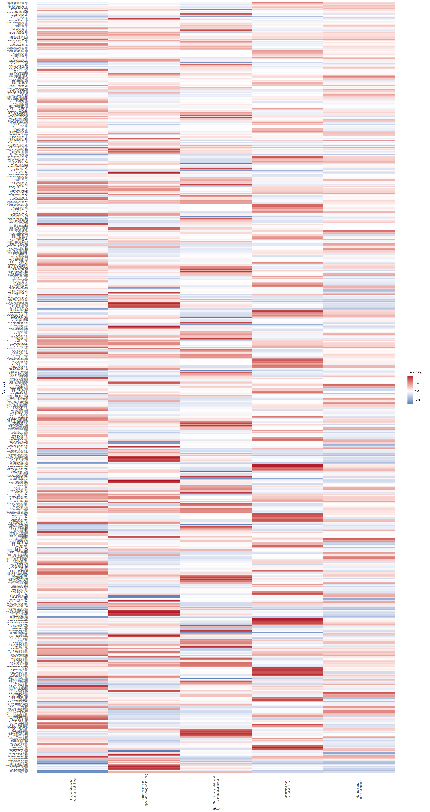
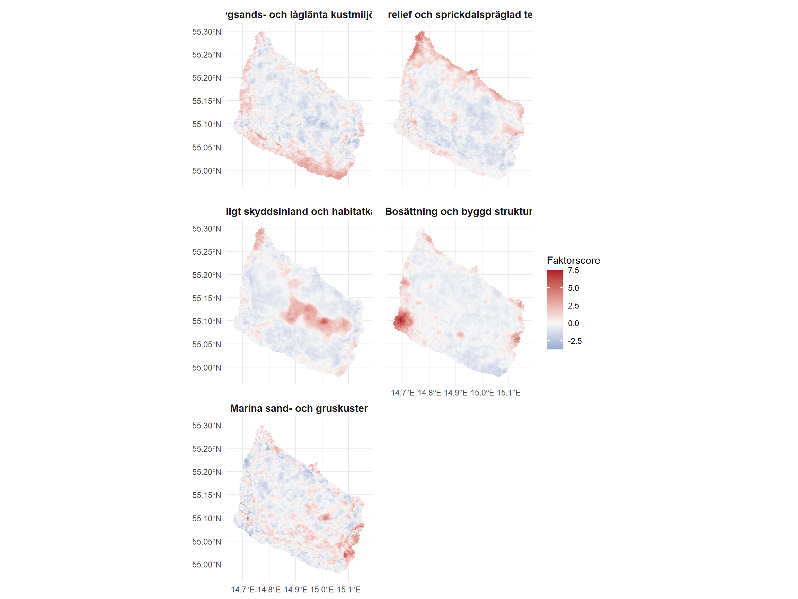
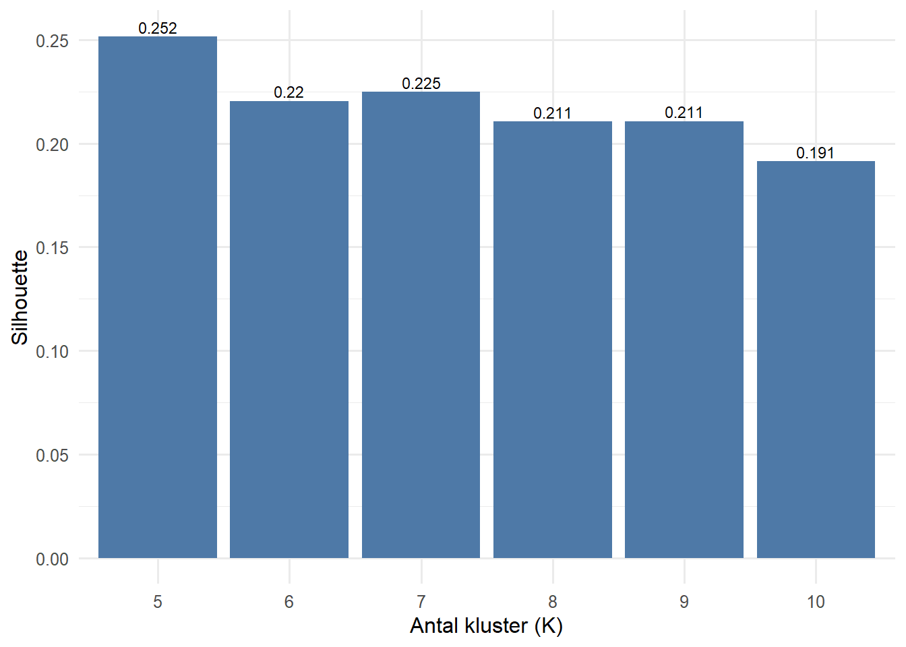
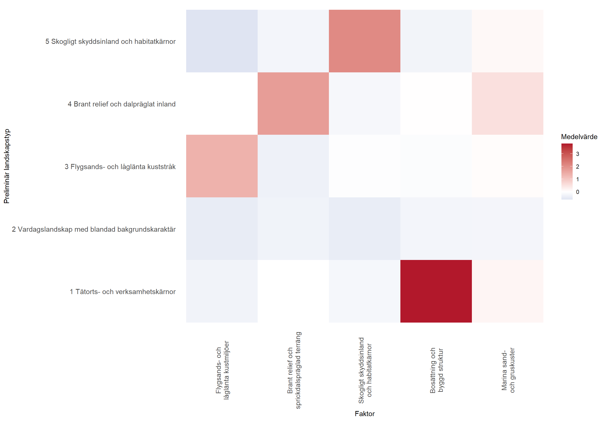

Landskapsanalys Bornholm
Denna rapport presenterar den aktuella landskapsanalysen för Bornholm. Fokus ligger på hur öns landskapskaraktär kan beskrivas med ett multiskalärt, hexagonbaserat analysramverk som kombinerar natur, bebyggelse, tillgänglighet, skydd, restriktioner och geologi.
Kartöversikt
Den samlade kartan ligger först i rapporten och är tänkt som huvudytan för tolkning. Här kan du växla mellan kluster och faktorer i samma HTML-karta, läsa tydliga legender och öppna popup-rutor som visar typ, tolkning, faktorprofil och de lager i hexet som bidrar mest till analysen.
1. Syfte och huvudfråga
Denna rapport beskriver den aktuella landskapsanalysen för Bornholm. Målet är att ge ett tydligt och spårbart underlag för att beskriva hur öns landskap är uppbyggt, var olika landskapssammanhang dominerar och vilka mönster som återkommer på flera skalor.
Huvudfrågan är:
Vilken landskapskaraktär har Bornholm när ön beskrivs med ett multiskalärt, hexagonbaserat analysramverk som kombinerar natur, bebyggelse, tillgänglighet, skydd, restriktioner och geologi?
Rapporten har tre konkreta uppgifter:
- att dokumentera vilken data som faktiskt ingår i modellen
- att steg för steg förklara hur rådata blir till faktorer och preliminära landskapstyper
- att ge en tolkning som är begriplig även för läsare som inte arbetar dagligen med faktoranalys och klustring
På längre sikt kan samma analyskedja vara ett av flera underlag i ett acceptanslager för vindkraft och solenergi. Den här rapporten är dock en landskapskaraktärsrapport, inte ett färdigt planeringsbeslut. Den säger något viktigt om struktur, mönster och landskapstyper, men gör inte hela avvägningen mellan landskapsvärden, juridik, teknik och social acceptans.
Det centrala värdet i nuläget är att modellen täcker stora delar av Bornholms relevanta landskapsinnehåll och dessutom använder ett terrängspår från originalhöjdkurvorna. Kvarvarande arbete handlar därför främst om validering, namnsättning och finjustering av hur jordbruksplatåer och sprickdalsliknande terräng ska uttryckas.
2. Studieområde, skala och avgränsning
Analysen omfattar Bornholm på samma R9-hexgrid som tidigare körningar, enligt H3:s upplösningssystem (H3: Tables of Cell Statistics Across Resolutions). Den fasta analysenheten är alltså en regelbunden hexagon, medan landskapskaraktären uppstår genom att varje hexagon beskrivs både lokalt och genom sin omgivning.
| aspekt | varde |
|---|---|
| Studieområde | Bornholm |
| Grundupplösning | R9-hex |
| Antal analyshexagoner | 7,286 |
| Exkluderade havshex utan signal | 605 |
| Antal ingångslager | 68 |
| Antal kontextvariabler | 680 |
| Valt klusterantal | 5 |
| Hex utan signal i totalvikten | 0 (0.0%) |
Skalvalet har tre konsekvenser:
- analysen är bra på att beskriva regionala och mellanskaliga mönster
- den är svagare för mycket små lokala kvaliteter som bara finns i några få hektar
- den får inte läsas som om varje enskild hexagon redan vore ett landskapsområde i sig
3. Datagrund
Analysen bygger på 68 lagersignaler. Datagrunden är därför bred nog för att fånga Bornholm som både naturgeografiskt och kulturgeografiskt landskap: skog, jordbruk, topografi, kust, vatten, kulturmiljö, bebyggelse, skydd, restriktioner och geologi finns nu i samma analysram.
Det betyder konkret att varje rålager först översätts till en jämförbar hexsignal: punktlager som antal eller summerade attributvärden per hexagon, linjelager som linjelängd inom hexagonen, polygonlager som area eller areaandel, och terränglager som sammanfattad statistik per hexagon.
Särskilt viktigt i denna rapport är att topografin inte bara beskrivs via tidigare hexaggregerade höjdmått. Analysen använder också en konturhärledd pseudo-DEM från originalhöjdkurvorna, varifrån medelhöjd, lutning och lokal daldjupssignal aggregeras tillbaka till hexagonerna.
Särskilt viktigt i denna rapport är att två tidigare provisoriska geologilager har ersatts av 21 tolkbara underkategorier från Jordart och Prekvart. Det gör att geologi inte längre bara finns som nästan heltäckande bakgrund, utan som faktisk landskapssignal som går att läsa och jämföra med andra teman.
I stora drag består datagrunden av följande grupper:
- bosättning och tillgänglighet: befolkning, vägar, färjerutter och flera bebyggelselager
- blågröna strukturer: sjöar, våtmarker, hede, skog, ekologiska samband, naturtyper och vattendrag
- kustsammanhang: kustlinje, kustzon, sanddyner och strandskydd
- kultur och markanvändning: kulturmiljövärden, värdefulla kulturmiljöer och jordbruksmark
- topografi och geologi: relief, högsta höjd, konturhärledd medelhöjd, konturhärledd lutning, konturhärlett daldjup, jordartsunderlag och prekvartär berggrund
- skydd och restriktioner: Natura, fredade områden, reservat, militära ytor och flygrestriktionslager
Tabellen nedan är den viktigaste referensen för exakt innehåll och bör läsas som modellens officiella lagerlista. Här ligger fokus på vad lagret är, vilken typ av hexsignal det blir, och varifrån datan kommer.
| Lager | Geometri | Tema | Datakälla | Hexsignal |
|---|---|---|---|---|
| Permanent population | Point count | Settlement | BRK (Bornholms Regionskommune) | Antal per hexagon |
| Road length (medium) | Line length | Access | GeoDanmark via Klimadatastyrelsen | Linjelängd inom hexagonen |
| Road length (large) | Line length | Access | GeoDanmark via Klimadatastyrelsen | Linjelängd inom hexagonen |
| Ecological connectivity | Polygon area share | Blue-green | Källdata i Bornholm geocontext-stack | Andel av hexagonens yta |
| Cultural and historical conservation values | Polygon area share | Culture | Källdata i Bornholm geocontext-stack | Andel av hexagonens yta |
| Fredskov | Polygon area share | Vegetation | Geodatastyrelsen MAT2 (GDS) | Andel av hexagonens yta |
| Agricultural land (Markblokke) | Polygon area share | Land use | Markblokke 2026 (lokal jordbruksdata; ej i SL01-PDF) | Andel av hexagonens yta |
| Relief | Continuous metric | Topography | GeoDanmark via Klimadatastyrelsen | Sammanfattat terrängmått per hexagon |
| Protected watercourses | Line length | Blue-green | Danmarks Miljoportal / Miljostyrelsen (MP/MST) | Linjelängd inom hexagonen |
| Lake | Polygon area share | Blue-green | GeoDanmark via Klimadatastyrelsen (GD-V/KDS) | Andel av hexagonens yta |
| Wetland | Polygon area share | Blue-green | GeoDanmark via Klimadatastyrelsen (GD-V/KDS) | Andel av hexagonens yta |
| Moor and hede | Polygon area share | Blue-green | GeoDanmark via Klimadatastyrelsen (GD-V/KDS) | Andel av hexagonens yta |
| Forest | Polygon area share | Vegetation | GeoDanmark via Klimadatastyrelsen (GD-V/KDS) | Andel av hexagonens yta |
| Coastal zone (3 km) | Polygon area share | Coast | Källdata i Bornholm geocontext-stack | Andel av hexagonens yta |
| Coastline | Line length | Coast | GeoDanmark via Klimadatastyrelsen (GD-V/KDS) | Linjelängd inom hexagonen |
| Valuable cultural environment | Polygon area share | Culture | Slots- og Kulturstyrelsen (SLKS) | Andel av hexagonens yta |
| Highest contour value | Continuous metric | Topography | GeoDanmark via Klimadatastyrelsen | Sammanfattat terrängmått per hexagon |
| River length | Line length | Blue-green | GeoDanmark via Klimadatastyrelsen (GD-V/KDS) | Linjelängd inom hexagonen |
| Sand dune | Polygon area share | Coast | GeoDanmark via Klimadatastyrelsen (GD-V/KDS) | Andel av hexagonens yta |
| Protected nature types | Polygon area share | Blue-green | Danmarks Miljoportal / Miljostyrelsen (MP/MST) | Andel av hexagonens yta |
| Mapped nature types | Polygon area share | Blue-green | Danmarks Miljoportal / Miljostyrelsen (MP/MST) | Andel av hexagonens yta |
| Industry and business land | Polygon area share | Settlement | GeoDanmark via Klimadatastyrelsen | Andel av hexagonens yta |
| Built centre | Polygon area share | Settlement | GeoDanmark via Klimadatastyrelsen (GD-V/KDS) | Andel av hexagonens yta |
| Buildings high | Polygon area share | Settlement | GeoDanmark via Klimadatastyrelsen (GD-V/KDS) | Andel av hexagonens yta |
| Buildings low | Polygon area share | Settlement | GeoDanmark via Klimadatastyrelsen (GD-V/KDS) | Andel av hexagonens yta |
| Strand protection | Polygon area share | Coast | Källdata i Bornholm geocontext-stack | Andel av hexagonens yta |
| Jordart - ML - Moræneler | Polygon area share | Geology | Källdata i Bornholm geocontext-stack | Andel av hexagonens yta |
| Jordart - MS - Morænsand | Polygon area share | Geology | Källdata i Bornholm geocontext-stack | Andel av hexagonens yta |
| Jordart - FP - Ferskvandsgytje | Polygon area share | Geology | Källdata i Bornholm geocontext-stack | Andel av hexagonens yta |
| Jordart - ES - Flyvesand | Polygon area share | Geology | Källdata i Bornholm geocontext-stack | Andel av hexagonens yta |
| Jordart - DS - Smeltevandssand | Polygon area share | Geology | Källdata i Bornholm geocontext-stack | Andel av hexagonens yta |
| Jordart - PKV - Prækvartært lag | Polygon area share | Geology | Källdata i Bornholm geocontext-stack | Andel av hexagonens yta |
| Jordart - Marina sand och grus - ovrigt | Polygon area share | Geology | Källdata i Bornholm geocontext-stack | Andel av hexagonens yta |
| Jordart - Farskvatten och organiskt - ovrigt | Polygon area share | Geology | Källdata i Bornholm geocontext-stack | Andel av hexagonens yta |
| Jordart - Smaltvatten - ovrigt | Polygon area share | Geology | Källdata i Bornholm geocontext-stack | Andel av hexagonens yta |
| Jordart - Ovrigt anlagt eller okant | Polygon area share | Geology | Källdata i Bornholm geocontext-stack | Andel av hexagonens yta |
| Prekvart - Gnejs | Polygon area share | Geology | Källdata i Bornholm geocontext-stack | Andel av hexagonens yta |
| Prekvart - Hammer och Almindinge | Polygon area share | Geology | Källdata i Bornholm geocontext-stack | Andel av hexagonens yta |
| Prekvart - Gronne Skifre | Polygon area share | Geology | Källdata i Bornholm geocontext-stack | Andel av hexagonens yta |
| Prekvart - Vang och Svaneke Gran | Polygon area share | Geology | Källdata i Bornholm geocontext-stack | Andel av hexagonens yta |
| Prekvart - Balka sandsten | Polygon area share | Geology | Källdata i Bornholm geocontext-stack | Andel av hexagonens yta |
| Prekvart - Sandsten och gronsand - ovrigt | Polygon area share | Geology | Källdata i Bornholm geocontext-stack | Andel av hexagonens yta |
| Prekvart - Sedimentara formationer - ovrigt | Polygon area share | Geology | Källdata i Bornholm geocontext-stack | Andel av hexagonens yta |
| Prekvart - Skifrar - ovrigt | Polygon area share | Geology | Källdata i Bornholm geocontext-stack | Andel av hexagonens yta |
| Prekvart - Kristallint - ovrigt | Polygon area share | Geology | Källdata i Bornholm geocontext-stack | Andel av hexagonens yta |
| Prekvart - Kalkbergarter - ovrigt | Polygon area share | Geology | Källdata i Bornholm geocontext-stack | Andel av hexagonens yta |
| Prekvart - Ovrigt stratigrafiskt | Polygon area share | Geology | Källdata i Bornholm geocontext-stack | Andel av hexagonens yta |
| Protected areas (fredede omrader) | Polygon area share | Protected nature | Källdata i Bornholm geocontext-stack | Andel av hexagonens yta |
| Natura 2000 specially designated land areas | Polygon area share | Protected nature | Danmarks Miljoportal / Miljostyrelsen (MP/MST) | Andel av hexagonens yta |
| Natura 2000 bird protection | Polygon area share | Protected nature | Danmarks Miljoportal / Miljostyrelsen (MP/MST) | Andel av hexagonens yta |
| Natura 2000 habitat areas | Polygon area share | Protected nature | Danmarks Miljoportal / Miljostyrelsen (MP/MST) | Andel av hexagonens yta |
| Natura 2000 Ramsar areas | Polygon area share | Protected nature | Danmarks Miljoportal / Miljostyrelsen (MP/MST) | Andel av hexagonens yta |
| Nature and wildlife reserves | Polygon area share | Protected nature | Danmarks Miljoportal / Miljostyrelsen (MP/MST) | Andel av hexagonens yta |
| Aviation approach zones | Polygon area share | Restriction | Trafikstyrelsen (TST) | Andel av hexagonens yta |
| Aviation bird-collision zones | Polygon area share | Restriction | Trafikstyrelsen (TST) | Andel av hexagonens yta |
| Military areas | Polygon area share | Restriction | Plan- og Landdistriktsstyrelsen / PlanDK (PLST/PDK) | Andel av hexagonens yta |
| Ferry routes | Line length | Access | OpenStreetMap (OSM) | Linjelängd inom hexagonen |
| Built low selection | Polygon area share | Settlement | GeoDanmark via Klimadatastyrelsen (GD-V/KDS) | Andel av hexagonens yta |
| Relief band: flat to weak | Continuous metric | Topography | Härlett från höjdkurvor och terrängunderlag | Andel av hex i reliefklass |
| Relief band: rolling | Continuous metric | Topography | Härlett från höjdkurvor och terrängunderlag | Andel av hex i reliefklass |
| Relief band: strong | Continuous metric | Topography | Härlett från höjdkurvor och terrängunderlag | Andel av hex i reliefklass |
| Elevation band: low | Continuous metric | Topography | Härlett från höjdkurvor och terrängunderlag | Andel av hex i höjdklass |
| Elevation band: mid | Continuous metric | Topography | Härlett från höjdkurvor och terrängunderlag | Andel av hex i höjdklass |
| Elevation band: high | Continuous metric | Topography | Härlett från höjdkurvor och terrängunderlag | Andel av hex i höjdklass |
| Contour-derived mean elevation | Continuous metric | Topography | Härlett från höjdkurvor och terrängunderlag | Medelhöjd från konturhärledd pseudo-DEM |
| Contour-derived mean slope | Continuous metric | Topography | Härlett från höjdkurvor och terrängunderlag | Medellutning från konturhärledd pseudo-DEM |
| Contour-derived valley depth (local max) | Continuous metric | Topography | Härlett från höjdkurvor och terrängunderlag | Lokalt max daldjup från konturhärledd pseudo-DEM |
| High agricultural plateau proxy | Continuous metric | Land use | Härlett från höjdkurvor och terrängunderlag | Proxy för hög jordbruksplatå |
| Tema | Antal lager | Exempel |
|---|---|---|
| Geology | 21 | Jordart - ML - Moræneler, Jordart - MS - Morænsand, Jordart - FP - Ferskvandsgytje |
| Topography | 11 | Relief, Highest contour value, Relief band: flat to weak |
| Blue-green | 8 | Ecological connectivity, Protected watercourses, Lake |
| Protected nature | 6 | Protected areas (fredede omrader), Natura 2000 specially designated land areas, Natura 2000 bird protection |
| Settlement | 6 | Permanent population, Industry and business land, Built centre |
| Coast | 4 | Coastal zone (3 km), Coastline, Sand dune |
| Access | 3 | Road length (medium), Road length (large), Ferry routes |
| Restriction | 3 | Aviation approach zones, Aviation bird-collision zones, Military areas |
| Culture | 2 | Cultural and historical conservation values, Valuable cultural environment |
| Land use | 2 | Agricultural land (Markblokke), High agricultural plateau proxy |
| Vegetation | 2 | Fredskov, Forest |
Tabellen ovan visar hur brett modellen faktiskt täcker ön. Den ska läsas som en snabb översikt: vissa teman består av många lager därför att de har splittrats i mer tolkbara undergrupper, medan andra teman representeras av färre men mycket starka signaler.
| Ej aktiv grupp | Antal lager | Exempel |
|---|---|---|
| Energiinfrastruktur | 6 | Transformatorstationer, Markkablar, Högspänningsledningar |
| Skyddade naturtyper: underkategorier | 6 | BES naturtyper: overdrev, BES naturtyper: hede, BES naturtyper: eng |
| Vattendrag: underkategorier | 3 | River 0-2.5 m, River 2.5-12 m, River okänd bredd |
| Vägar: ej använda varianter | 3 | Vägar small, Vägar other, Vägar total |
| Parentgeologi ersatt av underkategorier | 2 | Jordart parentlager, Prekvart parentlager |
| Bevaringsvärda landskap | 1 | Bevaringsvärdiga landskap |
| Dubbel kulturmiljösignal | 1 | Kulturhistorisk bevaringsværdi vedtaget |
Styrka i datagrunden: modellen täcker nu Bornholms huvudsakliga landskapssystem på ett sätt som gör den användbar som sammanhållen typologi och inte bara som en preliminär testkörning.
Det som fortfarande står utanför den aktiva 58-lagersmodellen: totalt 22 lager finns i den sammanfogade råmatrisen men används inte i den aktiva analysen. Vissa av dessa är medvetet ersatta av bättre representationer, till exempel att parentlagren för Jordart och Prekvart har bytts ut mot mer tolkbara underkategorier. Andra är rimliga kandidater för nästa prövning, särskilt energiinfrastruktur, bevaringsvärda landskap samt finare uppdelningar av vattendrag och naturtyper.
4. Metod och transparens
Metoden följer samma grundidé som i Juta Kawalerowicz och Bo Malmbergs multiskalära typologiarbete (Multiscalar Typology of Residential Areas in Sweden): en plats ska inte bara beskrivas av vad som finns i själva rutan, utan också av vilket sammanhang rutan ligger i när omgivningen läses på flera skalor. I deras fall gäller det bostadsområden; här överförs samma logik till landskapstyper på Bornholm.
Översatt till denna rapport betyder det:
- först samlas många olika landskapssignaler i samma hexagonala analysenhet
- sedan beskrivs varje hexagon både lokalt och genom sin omgivning på flera skalor
- därefter komprimeras den stora mängden mönster till ett mindre antal faktorer
- slutligen grupperas hexagoner med liknande faktorprofiler till preliminära landskapstyper
Analysen följer därmed en tydlig kedja från rådata till tolkning. Det gör också att varje steg kan granskas för sig: dataurvalet, kontextbyggandet, faktoranalysen, klustringen och den slutliga karttolkningen.
| Steg | Analyssteg | Vad det betyder i praktiken |
|---|---|---|
| 1 | Aggregera rådata till hexagoner | Punkter, linjer och polygoner översätts till jämförbara signaler i samma R9-hexgrid. |
| 2 | Bygg multiskalig kontext | Varje hexagon får inte bara sitt lokala värde utan också information om sin omgivning på flera skalor. |
| 3 | Rensa och standardisera analysmatrisen | Kolumner utan faktisk variation eller med tekniska problem tas bort så att modellen arbetar med meningsfull signal. |
| 4 | Extrahera faktorer | Återkommande samvariationer mellan många lager komprimeras till ett mindre antal tydliga gradienter. |
| 5 | Beräkna faktorscore per hexagon | Varje hexagon får ett värde på varje faktor och kan därmed beskrivas i samma faktorrum som resten av ön. |
| 6 | Gruppera hexagoner till preliminära landskapstyper | Hexagoner med liknande faktorprofiler samlas till kluster som tolkas som preliminära landskapstyper. |
| Metodsteg | Val |
|---|---|
| Analysenheter | Hexagoner med raw_total > 0 behalls som analysenheter; rena havshex tas bort fore kontextmatris och faktoranalys. |
| Kontextskalor | k = 10, 50, 100, 250, 1000 |
| Kontextvikt | Per-layer robust q99 scaling, theme-balanced aggregation within each geometry type, moderate agricultural-land priority, mild continuous-metric uplift, six terrain bands from relief and absolute height, and four contour-derived terrain metrics from an interpolated pseudo-DEM. |
| Skallogik | kumulativ vikt, inte fasta hexringar |
| Kontextmått per lager | mean och std |
| Antal faktorer | 5 |
| Faktoranalys | minres |
| Rotation | varimax |
| Faktorscore | tenBerge |
| Klusterprövning | K = 5..10 |
| Klusterval | högst silhouette, nu K = 5 |
4.1 Från rådata till kontext
Varje ingångslager aggregeras först till R9-hexagoner. Därefter byggs en kontextmatris där varje hexagon får information om sin omgivning vid k = 10, 50, 100, 250, 1000.
I praktiken betyder det att alla geometrier först översätts till samma analysenhet. Punktlager summeras som antal eller summerade attributvärden för de punkter som faller inom hexagonen. Linjelager summeras som den linjelängd som ligger inom hexagonen. Polygonlager översätts till total area eller areaandel inom hexagonen. Kontinuerliga terrängmått sammanfattas som statistik per hexagon, till exempel medelvärde, relief eller högsta värde. Först när alla lager uttrycks i denna gemensamma form kan de jämföras, viktas och läsas tillsammans i samma analysmatris.
Två mått beräknas för varje lager och varje skala:
mean: hur mycket av signalen som i genomsnitt finns i omgivningenstd: hur jämn eller splittrad signalen är i omgivningen
Detta steg är avgörande. En hexagon med lite skog kan ligga mitt i ett stort skogligt inland, i en kustnära övergångszon eller i ett jordbrukslandskap med små skogsöar. Lokalt värde räcker därför inte; det är kombinationen av lokalt innehåll och omgivande struktur som gör tolkningen landskaplig.
I denna modell är k inte samma sak som antal hexringar. I stället anger k hur mycket kumulativ kontextvikt som ska fångas upp när modellen går utåt genom närmaste grannar. Det betyder att samma k kan motsvara olika geografiska utbredningar i olika delar av ön beroende på hur stark signalstrukturen är.
Den aktiva viktstrategin i denna körning är Per-layer robust q99 scaling, theme-balanced aggregation within each geometry type, moderate agricultural-land priority, mild continuous-metric uplift, six terrain bands from relief and absolute height, and four contour-derived terrain metrics from an interpolated pseudo-DEM.. Det betyder i praktiken att modellen inte bara frågar vilka grannar som ligger närmast, utan också hur mycket samlad signalvikt som fångas när kontexten byggs utåt från varje hexagon.
I denna körning reskalas den balanserade kontextvikten dessutom med faktor 68.000 enligt rescale-läget ‘n_input_layers’ innan k-trösklarna beräknas.
Med 68 lager och två kontextmått över fem skalor får modellen 680 kontextvariabler. Det är dessa variabler, inte de råa lagren ensamma, som utgör den egentliga analysmatrisen.
4.2 Vad en faktor är, och vad den inte är
Faktoranalys kan lätt uppfattas som abstrakt. I den här rapporten är det därför viktigt att definiera begreppet tydligt:
- en faktor är inte ett färdigt område på kartan
- en faktor är inte heller ett juridiskt eller administrativt lager
- en faktor är i stället en återkommande gradient i datan: ett sätt på vilket flera lager och flera skalor tenderar att samvariera
Om exempelvis skog, fredskov och vissa natur- eller geologisignaler ofta förekommer tillsammans på flera skalor, kommer faktoranalysen att försöka fånga detta som en sammanhållen riktning. Varje hexagon får sedan ett faktorscore som visar hur starkt den hör ihop med just den gradienten.
I denna körning görs faktoranalysen i fyra steg:
- kontextmatrisen standardiseras så att olika enheter blir jämförbara
- kolumner med nollvarians, bara saknade värden eller infinita värden tas bort
- endast rader med komplett faktorinput används i själva faktorberäkningen
minresmedvarimaxanvänds för att få en tolkbar uppsättning relativt ortogonala faktorer
Resultatet ska läsas som en komprimerad beskrivning av Bornholms viktigaste återkommande landskapssamband, inte som ett facit över färdiga landskapsrum.
4.3 Vad ett kluster är, och vad det inte är
Efter faktoranalysen grupperas hexagoner med liknande faktorprofiler. Det är detta som ger rapportens preliminära landskapstyper.
Även här behövs en tydlig definition:
- ett kluster är en grupp hexagoner som liknar varandra i faktorrummet
- ett kluster behöver inte vara sammanhängande som en enda polygon på kartan
- klustret blir meningsfullt först när dess faktorprofil jämförs med kartläge, datainnehåll och Bornholms kända landskapsstruktur
Klustren är alltså modellens bästa försök att översätta abstrakta faktorer till läsbara landskapstyper. Därför är klusterkartan mer konkret än faktorernas kartor, men den bygger fortfarande på en statistisk typologi och måste tolkas med landskapskunskap.
4.4 Viktiga metodiska förbehåll
- Faktoranalysen bygger på 680 kontextvariabler, inte direkt på de 68 rålagren.
- 605 rena havshex utan signal har tagits bort före kontextmatris, faktoranalys och klustring.
- Kust- eller havshex med faktisk signal ligger däremot kvar, till exempel om de träffas av kustlinje, kustzon, färjerutter eller andra aktiva lager. Masken är alltså en signalmask, inte en ren landmask.
- 0 hexagoner saknar total signal i viktkolumnen. De ligger kvar i geografin men visar att vissa delar av modellen fortfarande är tunna.
- Den nuvarande viktlogiken blandar ytor, linjelängder och punktvärden i samma
total, vilket kan ge slagsida redan före faktoranalysen. - De fem faktorerna förklarar cirka 37.3% av totalvariansen. Det är användbart men innebär att rapporten fortfarande är en förenkling av verkligheten.
- Flera lager är skydds- eller restriktionslager snarare än direkta landskapsprocesser. De är viktiga för planeringsrelevans, men kräver försiktig tolkning i den rena landskapstypologin.
5. Resultat: faktorernas landskapsgradienter
| Metrik | F1 | F2 | F3 | F4 | F5 |
|---|---|---|---|---|---|
| SS loadings | 61.273 | 55.440 | 52.599 | 50.954 | 29.358 |
| Andel av total varians | 0.091 | 0.083 | 0.079 | 0.076 | 0.044 |
| Kumulativ andel av total varians | 0.091 | 0.174 | 0.253 | 0.329 | 0.373 |
| Andel av forklarad varians | 0.245 | 0.222 | 0.211 | 0.204 | 0.118 |
| Kumulativ andel av forklarad varians | 0.245 | 0.468 | 0.678 | 0.882 | 1.000 |
| Faktor | Aktuell tolkning | Starkaste signaler | Hur faktorn ska läsas |
|---|---|---|---|
| F1 | Flygsands- och låglänta kustmiljöer | Jordart - ES - Flyvesand (medel, k=1000), Jordart - ES - Flyvesand (std, k=1000), Jordart - ES - Flyvesand (medel, k=250) | Domineras av flygsand, låga höjdband och låg konturhärledd medelhöjd över flera skalor. Faktorn fångar sandiga, låglänta kustmiljöer och skiljer dem från högre inlandslägen och platåsignaler på den negativa polen. |
| F2 | Brant relief och sprickdalspräglad terräng | Contour-derived mean slope (medel, k=250), Relief (medel, k=250), Contour-derived mean slope (medel, k=100) | Drivs mycket tydligt av konturhärledd lutning, relief och maximal lokal daldjupssignal. Faktorn beskriver ett brant, terrängkontrasterat och delvis sprickdalspräglat inland snarare än enbart allmän höjd. |
| F3 | Skogligt skyddsinland och habitatkärnor | Forest (medel, k=1000), Natura 2000 habitat areas (medel, k=250), Natura 2000 habitat areas (medel, k=100) | Domineras av skog, fredskov och Natura-habitat- och fågelskydd på mellanstora och stora skalor och beskriver ett skogligt skyddsinland med tydliga habitatkärnor. |
| F4 | Bosättning och byggd struktur | Permanent population (medel, k=250), Permanent population (medel, k=1000), Permanent population (std, k=250) | Drivs främst av fastboende, låg bebyggelse, centrumfunktioner, vägar och verksamhetsmark och beskriver öns bosättnings- och bebyggelsestruktur snarare än enbart tätorter. |
| F5 | Marina sand- och gruskuster | Jordart - Marina sand och grus - ovrigt (medel, k=1000), Jordart - Marina sand och grus - ovrigt (medel, k=250), Jordart - Marina sand och grus - ovrigt (std, k=1000) | Kopplar marina sand- och grusavlagringar till låga kustsedimentära miljöer och beskriver särskilda kustbundna sedimentpaket snarare än hela den generella kustzonen. |
Tabellen ovan är den enklaste vägen in i faktorresultatet. Om en läsare bara ska ta med sig en sak från faktorsteget är det att varje faktor får sin mening av vilka signaler som drar åt samma håll över flera skalor, inte av ett enda kartlager.
Den sakliga tolkningen av faktorerna ska i första hand styras av deras starkaste och mest sammanhängande laddningar. Tabellen nedan visar därför de 6 största absoluta laddningarna per faktor och är den primära läsnyckeln till faktorernas innehåll.
| factor | variabel | loading |
|---|---|---|
| Flygsands- och låglänta kustmiljöer | Jordart - ES - Flyvesand (medel, k=1000) | 0.846 |
| Flygsands- och låglänta kustmiljöer | Jordart - ES - Flyvesand (std, k=1000) | 0.841 |
| Flygsands- och låglänta kustmiljöer | Jordart - ES - Flyvesand (medel, k=250) | 0.828 |
| Flygsands- och låglänta kustmiljöer | Jordart - ES - Flyvesand (std, k=250) | 0.811 |
| Flygsands- och låglänta kustmiljöer | Jordart - ES - Flyvesand (medel, k=100) | 0.805 |
| Flygsands- och låglänta kustmiljöer | Jordart - ES - Flyvesand (std, k=100) | 0.780 |
| Brant relief och sprickdalspräglad terräng | Contour-derived mean slope (medel, k=250) | 0.925 |
| Brant relief och sprickdalspräglad terräng | Relief (medel, k=250) | 0.924 |
| Brant relief och sprickdalspräglad terräng | Contour-derived mean slope (medel, k=100) | 0.916 |
| Brant relief och sprickdalspräglad terräng | Relief (medel, k=100) | 0.914 |
| Brant relief och sprickdalspräglad terräng | Contour-derived mean slope (medel, k=50) | 0.897 |
| Brant relief och sprickdalspräglad terräng | Relief (medel, k=50) | 0.894 |
| Skogligt skyddsinland och habitatkärnor | Forest (medel, k=1000) | 0.862 |
| Skogligt skyddsinland och habitatkärnor | Natura 2000 habitat areas (medel, k=250) | 0.862 |
| Skogligt skyddsinland och habitatkärnor | Natura 2000 habitat areas (medel, k=100) | 0.856 |
| Skogligt skyddsinland och habitatkärnor | Forest (medel, k=250) | 0.849 |
| Skogligt skyddsinland och habitatkärnor | Natura 2000 habitat areas (medel, k=50) | 0.849 |
| Skogligt skyddsinland och habitatkärnor | Natura 2000 habitat areas (medel, k=1000) | 0.848 |
| Bosättning och byggd struktur | Permanent population (medel, k=250) | 0.913 |
| Bosättning och byggd struktur | Permanent population (medel, k=1000) | 0.912 |
| Bosättning och byggd struktur | Permanent population (std, k=250) | 0.911 |
| Bosättning och byggd struktur | Built low selection (medel, k=1000) | 0.897 |
| Bosättning och byggd struktur | Buildings low (medel, k=1000) | 0.884 |
| Bosättning och byggd struktur | Permanent population (std, k=1000) | 0.876 |
| Marina sand- och gruskuster | Jordart - Marina sand och grus - ovrigt (medel, k=1000) | 0.703 |
| Marina sand- och gruskuster | Jordart - Marina sand och grus - ovrigt (medel, k=250) | 0.682 |
| Marina sand- och gruskuster | Jordart - Marina sand och grus - ovrigt (std, k=1000) | 0.670 |
| Marina sand- och gruskuster | Jordart - Marina sand och grus - ovrigt (std, k=250) | 0.656 |
| Marina sand- och gruskuster | Jordart - Marina sand och grus - ovrigt (medel, k=100) | 0.653 |
| Marina sand- och gruskuster | Jordart - Marina sand och grus - ovrigt (std, k=100) | 0.630 |
Den kompletta laddningsmatrisen finns kvar som diagnostik och rimlighetskontroll, men den ska inte vara rapportens huvudsakliga tolkningsyta. Den lasbara huvudytan for hela matrisen finns nu som filtrerbar Excel-fil.
Open readable loadings workbook (Excel)


Öppna faktorkartan i egen flik / helskärm
Vad som är viktigast i faktorsteget: modellen skiljer nu tydligt mellan minst fem olika logiker i Bornholms landskap: låglänta sandkuster, brant relief och dalinslag, skogligt skyddsinland med habitatkärnor, bosättning och byggd struktur samt marina sand- och gruskuster. Ingen faktor är ensam en landskapstyp, men tillsammans beskriver de vad som återkommer på ön som stabila gradienter.
6. Resultat: preliminära landskapstyper
| K | Silhouette | Beräkningsbas |
|---|---|---|
| 5 | 0.252 | full |
| 7 | 0.225 | full |
| 6 | 0.220 | full |
| 9 | 0.211 | full |
| 8 | 0.211 | full |
| 10 | 0.191 | full |

Klustren är rapportens mest konkreta resultat. För en läsare utan förkunskaper är det därför ofta bäst att börja här: ett kluster är helt enkelt en grupp hexagoner som liknar varandra i faktorprofil och därför kan tolkas som en preliminär landskapstyp.
| Kluster | Andel | Dominerande faktor | Nästa tydliga faktor | Kort läsning |
|---|---|---|---|---|
| 1 Tätorts- och verksamhetskärnor | 0.041 | Bosättning och byggd struktur | Marina sand- och gruskuster | Mycket hög F4 visar öns tydligaste tätorts- och verksamhetskärnor, där byggd struktur, fastboende och tillgänglighet samlas starkare än övriga faktorer. |
| 2 Vardagslandskap med blandad bakgrundskaraktär | 0.488 | Marina sand- och gruskuster | Bosättning och byggd struktur | Låga eller svagt negativa värden på de flesta faktorer visar öns breda bakgrundslandskap där flera signaler blandas utan stark specialisering i någon riktning. |
| 3 Flygsands- och låglänta kuststråk | 0.218 | Flygsands- och låglänta kustmiljöer | Marina sand- och gruskuster | Hög F1 och svag bosättnings- och skogssignal visar låglänta sand- och kuststråk där flygsand, låga höjder och kustnära lågland logiskt samverkar. |
| 4 Brant relief och dalpräglat inland | 0.136 | Brant relief och sprickdalspräglad terräng | Marina sand- och gruskuster | Mycket hög F2 tillsammans med viss positiv F5-signal markerar öns branta, terrängkontrasterade och dalpräglade inlandslägen där konturhärledd lutning och daldjup gör störst skillnad. |
| 5 Skogligt skyddsinland och habitatkärnor | 0.117 | Skogligt skyddsinland och habitatkärnor | Marina sand- och gruskuster | Mycket hög F3 markerar Bornholms tydligaste skogliga, habitatpräglade och skyddsinriktade inlandsmiljöer. |
| Kluster | Andel | F1 | F2 | F3 | F4 | F5 | Tolkning |
|---|---|---|---|---|---|---|---|
| 1 Tätorts- och verksamhetskärnor | 0.041 | -0.277 | 0.003 | -0.195 | 3.809 | 0.175 | Mycket hög F4 visar öns tydligaste tätorts- och verksamhetskärnor, där byggd struktur, fastboende och tillgänglighet samlas starkare än övriga faktorer. |
| 2 Vardagslandskap med blandad bakgrundskaraktär | 0.488 | -0.443 | -0.283 | -0.418 | -0.234 | -0.221 | Låga eller svagt negativa värden på de flesta faktorer visar öns breda bakgrundslandskap där flera signaler blandas utan stark specialisering i någon riktning. |
| 3 Flygsands- och låglänta kuststråk | 0.218 | 1.370 | -0.323 | -0.037 | -0.073 | 0.059 | Hög F1 och svag bosättnings- och skogssignal visar låglänta sand- och kuststråk där flygsand, låga höjder och kustnära lågland logiskt samverkar. |
| 4 Brant relief och dalpräglat inland | 0.136 | 0.004 | 1.737 | -0.177 | 0.021 | 0.540 | Mycket hög F2 tillsammans med viss positiv F5-signal markerar öns branta, terrängkontrasterade och dalpräglade inlandslägen där konturhärledd lutning och daldjup gör störst skillnad. |
| 5 Skogligt skyddsinland och habitatkärnor | 0.117 | -0.620 | -0.236 | 2.087 | -0.259 | 0.122 | Mycket hög F3 markerar Bornholms tydligaste skogliga, habitatpräglade och skyddsinriktade inlandsmiljöer. |
I tabellen ovan betyder positiva värden att klustret har mer av en viss faktor än ö-genomsnittet, medan negativa värden betyder att faktorn är svagare där än i Bornholms typiska bakgrundslandskap. Man ska därför inte läsa siffrorna som absoluta mängder, utan som riktning och styrka i relation till resten av ön.

Öppna klusterkartan i egen flik / helskärm
I denna analys väljs K = r k_best. Det viktigaste med det valet är att lösningen ger flera tydligt olika typer utan att splittra resultatet i många små restkluster. Samtidigt visar fördelningen att kluster 2 fungerar som öns breda vardagsmatris, medan övriga kluster fångar mer specialiserade bosättnings-, låglandskust-, brant terräng- och skogliga naturmönster.
7. Tolkning, osäkerheter och begränsningar
Den här analysen kan beskrivas som en mogen arbetsmodell. Den är tillräckligt bred och sammanhängande för att ge en meningsfull typologi av Bornholm, men den kräver fortfarande slutlig validering och viss komplettering innan den bör behandlas som helt stabil referensmodell.
Det starkaste i nuläget är att modellen kan skilja mellan flera olika landskapssammanhang som också är begripliga i kartan:
- flygsands- och låglänta kuststråk
- bosättnings- och bebyggelsestrukturer med olika täthet
- skogligt skyddsinland med habitatkärnor
- branta och dalpräglade inlandsmiljöer
- marina sand- och gruspräglade kustsedimentmiljöer
De viktigaste kvarvarande osäkerheterna är däremot fortfarande tydliga:
- viktkolumnen i kontextsteget blandar flera måttenheter och kan därför påverka grannskap och faktorstruktur
- pseudo-DEM:en är härledd från höjdkurvor, inte från en fullständig laserbaserad höjdmodell
- vissa ännu ej använda underkategorier, energilager och bevarandelager kan förändra delar av bilden
- skydds- och restriktionslager bidrar till planeringsrelevans men är inte alltid samma sak som egen landskapsprocess
- faktor- och klusternamn är fortfarande tolkningar och bör ses som arbetsnamn tills de har verklighetskontrollerats mot kartor och Bornholmskännedom
Rapporten bör därför användas som:
- en transparent beskrivning av Bornholms landskapstyper i flera skalor
- ett arbetsunderlag för fortsatt expertgranskning, karttolkning och typologisk namnsättning
- en möjlig grund för senare acceptans- eller känslighetsbedömningar
Rapporten bör ännu inte användas som ensam beslutsgrund för lokalisering, tillstånd eller slutlig värdering av enskilda platser.
8. Typologisk tolkning och nästa steg
Som tolkningsram är två referenser särskilt viktiga för denna rapport. Den första är Juta Kawalerowicz och Bo Malmbergs multiskalära typologitänkande (Multiscalar Typology of Residential Areas in Sweden): platser ska beskrivas både av sina lokala egenskaper och av sin omgivning på flera skalor. Här används det som en metodisk anpassning, inte som en direkt kopia av deras bostadstypologi. Den andra är den befintliga Bornholmsanalysen i Landskapstyper Bornholm (PDF), som fungerar som verklighetskontroll för hur översiktliga landskapsrum faktiskt brukar beskrivas på ön.
Det viktiga är inte att denna modell ska kopiera någon tidigare typologi exakt. Det viktiga är att den ska återge huvuddragen i Bornholms landskap på ett sätt som är både statistiskt hållbart och geografiskt begripligt. Om låglänta sandkuster, skogligt skyddsinland, brant dalpräglat inland, vardagslandskap och bebyggda kärnor går att läsa tydligt i samma modell, då är typologin på väg att gå i mål.
Nästa steg är därför både validerande och metodiskt riktade:
- kontrollera att faktor- och klusternamn stämmer med kartornas faktiska geografi
- pröva om jordbruksplatå och sprickdalsmönster blir tydligare med fler konturhärledda derivat eller med verklig DEM
- jämföra huvudmönstren mot Bornholms befintliga landskapstypologi och lokal kunskap
- därefter låsa en stabil referensmodell för fortsatt planeringsanvändning
Det betyder att rapporten nu bör läsas som en nästan färdig landskapstypologi: tillräckligt utvecklad för att diskuteras som huvudmodell, men fortfarande öppen för en sista omgång tolkning, kalibrering och expertkontroll.
Utdata från analysen
Rapporten bygger på ett sammanhållet analysunderlag som innehåller lagerdata, factorscores, klusterprofiler och hexagonlager för kartor och tolkning.
Till analysen hör bland annat följande utdata:
- punkt- och kontextdata per hexagon
- factorscores per hexagon
- faktorladdningar och klusterprofiler
- hexagonlager för kartor och tolkning
Referenser
- H3. Tables of Cell Statistics Across Resolutions. H3 documentation. https://h3geo.org/docs/core-library/restable/
- Kawalerowicz, J., & Malmberg, B. Multiscalar Typology of Residential Areas in Sweden. Stockholm University / Figshare. https://su.figshare.com/articles/dataset/Multiscalar_typology_of_residential_areas_in_Sweden/14753826
- Landskapstyper Bornholm (PDF). https://github.com/gislab-se/landskapsanalys/blob/main/data/Landskapstyper%20Bornholm.pdf